Tablero comparativo de la fase de diseño. Las direcciones son composiciones esquemáticas en HTML (no diseño final ni código de producción); Scope aparece siempre con renders reales del modelo aprobado, hechos en Blender headless con la cámara del sitio. Los documentos que lo explican están en docs/redesign/01–06.
Esquemas — los textos de producto y las capturas son marcadores de posición
Una plantilla sólida con un personaje excelente metido en cajas.
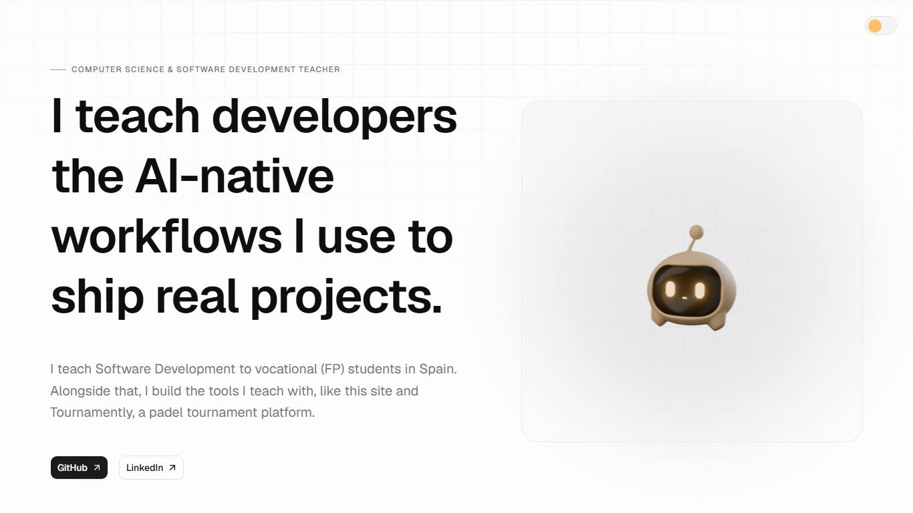
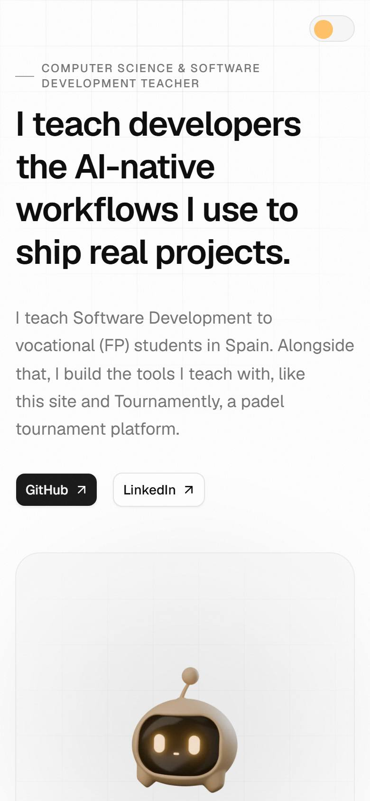
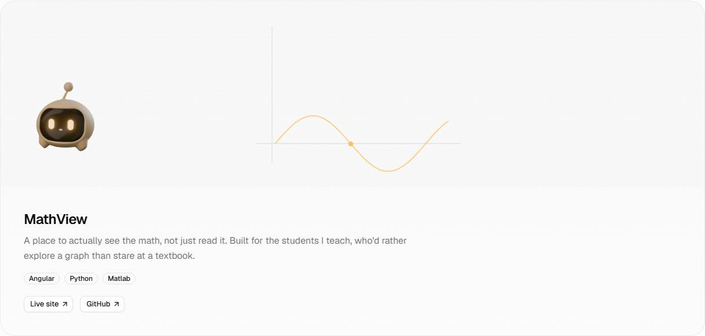
Geist en todo · Newsreader solo en el Notebook · Geist Mono sin uso · 11 tamaños
Una monografía técnica; Scope es el lector del margen, sentado sobre la regla.
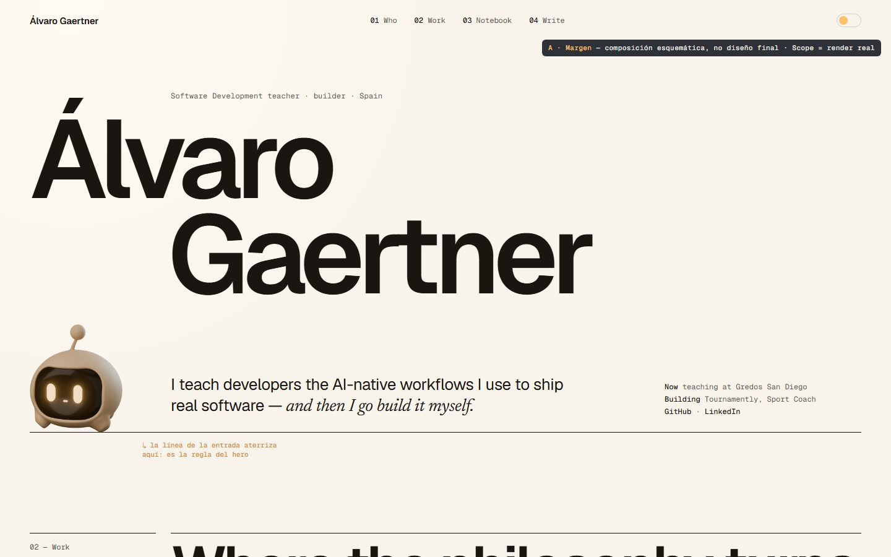
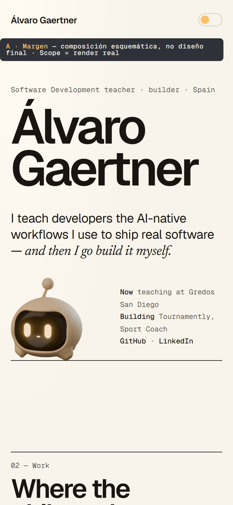
Geist 600 56–184 px, tracking −5 % · Geist Mono índices y metadatos · Newsreader cursiva en citas
Abrir composición → · 2–3 semanas
Toda la web es un estudio de noche; la luz de Scope ilumina lo que hay cerca.
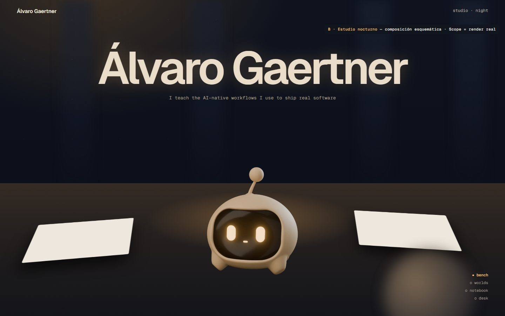
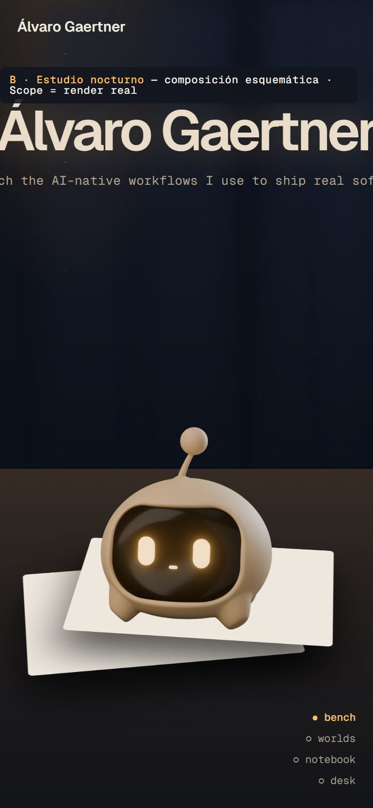
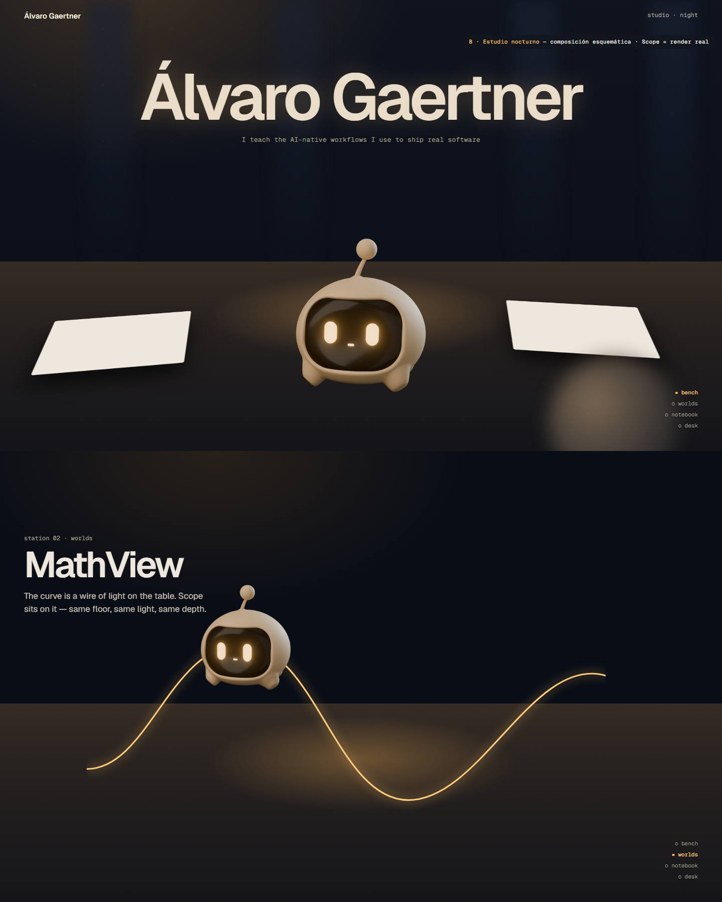
Geist como rótulo iluminado · Geist Mono en el minimapa de estaciones
Abrir composición → · 6–8 semanas + props
Toda página tiene un reverso. Scope es la lente que deja ver cómo se construyó con IA.
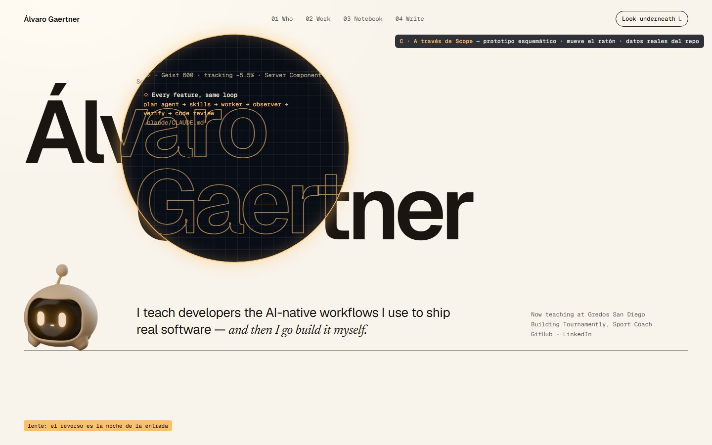
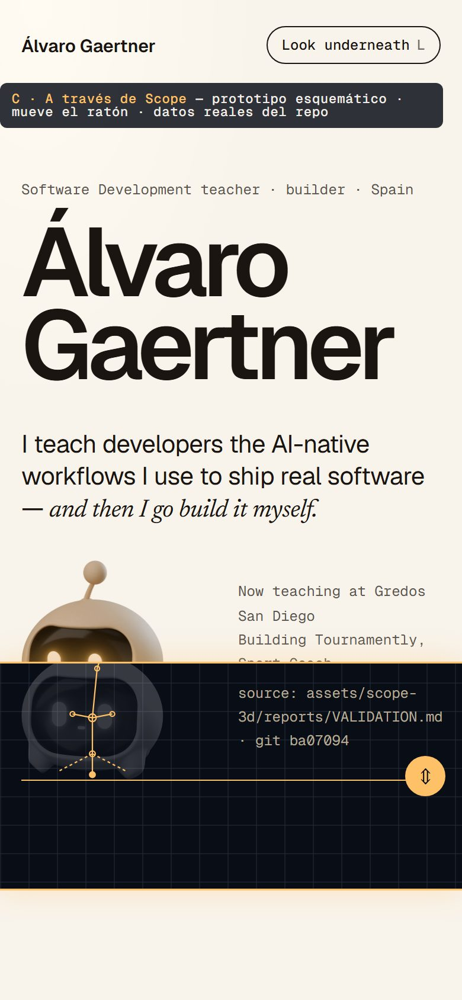
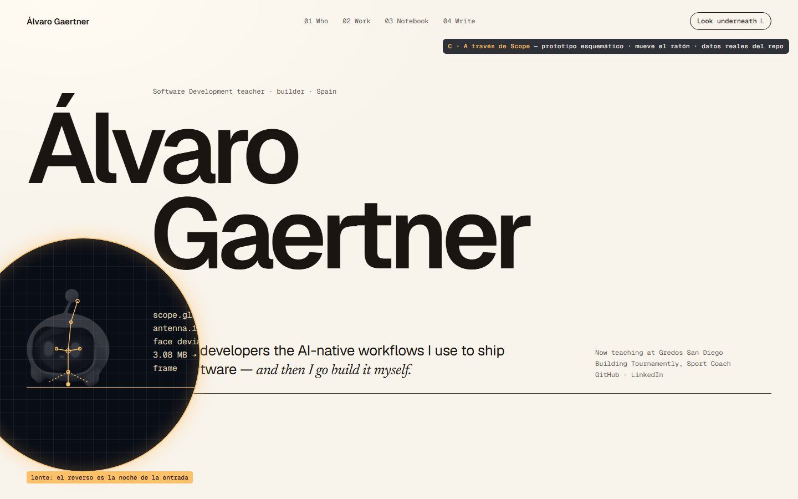
Anverso con la tipografía de A · reverso en Geist Mono ámbar sobre noche
Abrir prototipo (interactivo) → · 4–6 semanas